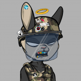
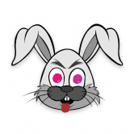
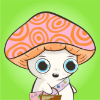
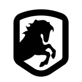
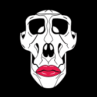
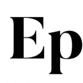
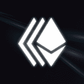
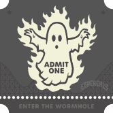

GeekPandaz GeekPandaz 是 Immutable X 上 1,500 个独特 NFT 的 Genesis 集合，这是一种提供无气体铸造和交易的第 2 层以太坊解决方案。 每只熊猫都值得一看 - 精心设计，配备配件，随时准备接管 Pandaria 世界
Little Rocketman HTML Little Rocketman 是 9,999 个独特的 NFT 的集合，这些 NFT 从生活在 Ethereum 和 Immutable X 区块链上的手绘图中随机生成，作为 ERC-721 代币，每个都为赢得世界的尊重和权威而奋斗。 为什么要创建这
Llamaverse Genesis 吐痰哥们 随着我们 Spit Buddies 的推出，我们将寻求跨社区合作。这将使我们能够与我们的合作社区一起拓宽我们的视野，并使我们的两个持有者能够轻松地融入我们的
Lonely Alien Space Club Lonely Alien Space Club 是存储在以太坊区块链上的 10,000 个独特的 ERC-721 代币的集合。每个 NFT 都是非连续铸造且可证明是独一无二的，都拥有完整的会员资格，包括功能实用的实用程
Lonely Frog Lambo Club Lonely Frog Lambo Club 是以太坊区块链上 10,000 个独特的随机生成和策划的青蛙 NFTS 的集合。每只孤独的青蛙都是独一无二的，由超过 150 种独特的特征生成，包括表情、服装、头饰
Loopy Donuts 10,000 个 Loopy Donuts 设法摆脱了无聊、陈旧的公司甜甜圈店的货架，在以太坊区块链周围嬉戏。虽然看起来我们的 Loopy Donuts 都是关于乐趣的，但它们实际上是您去 LoopyLand 的 VIP 票。L
Loot explorer 🎮 我们在做游戏吗？ 🗺️ 有多少探险家可供铸造？ 🔳 我需要 Loot 来铸造 Explorer 吗？ 💰 薄荷的价格是多少？ 战利品：探索者是 8000 个独特的探索者角色，拥有自己独特的职
Loot for Losers Loot for Losers - 自动生成；完全上链；限量8000个，超过7000个可免费领取 加入我们的社区，持有 LOSR 并拥有 LOM（本月失败者）的投票权。每个 LOM 获胜者都
LootFish LootFish 是 Avalanche C 链上的一个独特的 NFT 集合，包含 10000 条美丽而异国情调的鱼。该系列中有数百种外来鱼类，从彩虹鱼到垂钓者到倒钩。 LootFish 涵盖了海洋生物的整个范围，没
LOSTPOETS Lost Poets 是一款 NFT 收藏品和策略游戏。 NFT 集合包括 65536 个可获取的 NFT 和 1024 个 Origin NFT。该项目的发布分为几个阶段。有关详细信息，请参阅秘密路线图。 很久以前，在
LOVET Polygon 上 1024 个生成艺术的 NFT 集合。该项目于 2021 年 12 月开始，旨在为加密空间带来独特的 NFT 生态系统。 用 Python 编写的自定义代码已用于生成整个集合。这个想法是为了实
Luchadores.io Luchador NFT 是在购买时使用 Chainlink VRF 随机生成的。 100% 链上艺术和元数据 最多8个稀有属性 10,000 最大供应量 数百万种可能的组合 兼容 OpenSea 价格与 2 LINK 的价值挂钩，但以 ETH 支付。 我
Lucky Dog Club Lucky Dog Club 是一个拥有 NFT 收藏品的爱犬俱乐部。总共有 10,000 个独特的幸运狗 NFT——生活在以太坊区块链上的独特数字收藏品。访问 www.luckydogclub.org 了解更多信息。 是时候选择#
Mad Octopus Diving Club 我们是疯狂章鱼潜水俱乐部🐙，我们开创了环境可持续的 NFT。 原因：每天有 800 万件塑料件污染我们的海洋。🌊 内容：因此，我们创建了 MODC 来提高人们对这个
 Mad Rabbits Riot Club Mad Rabbits Riot Club 是一个令人痛心但（字面上）有益的冒险，进入一个喧闹的 ETH 抢劫、地盘争夺战、秘密集会……以及偶尔入狱的世界。仅存在 7,500 只程序生成的兔子，每
 MadBunnies MadBunnies 是 10,000 个很酷的全新手绘和计算机生成的 NFT，您可以购买、拥有和交易！独家在币安智能链上。 🔹限量10,000！ 🔹 各大平台上市 🔹 与 BSC NFT 的顶级市场
 Magic Mushroom Clubhouse Magic Mushroom Clubhouse 是一支由 9,200 名探险家组成的友好队伍，他们正在清理生物元宇宙。他们通过传播蘑菇的古老力量、发现祖先的秘密并一路帮助他人，从而在冒险中获得徽
DeFi Farmers DeFi Farmers 由居住在 Avalanche 网络上的 9,500 名随机生成的生态友好型 NFT Farmers 组成。每个 DeFi Farmer 都是一个 NFT，代表“Ecoverse”中的一个化身。 通过持有 DeFi Farmer
Degdango Degdango 是第一个在 Harmony 区块链上使用 Tokenomics 的 NFT 项目。 Degdangos是富裕的血统，除了非常可爱和具有令人敬畏的稀有特征可以交易之外，它们还具有特殊的能力
Degen Ducks 许多鸭子。许多元宇宙。很多商品？ Degen Ducks #NFTs 来到#Solana ❌ #FTM。好玩➕实惠➕稀有！ 2万美元奖金！ Degen Ducks 是一个由 88 只鸭子组成的集团，这些鸭子
DEGEN TOONZ COLLECTION 8888 degen TOONZ 作为独家元节社区的成员，拥有从头开始构建它的能力。 GM GN Industries 现已开业！访问下面的链接来领取你的炸药并引爆你的 Toonz！请注意一个淘气的角
 DeRace Horses DeRace 是一个完整的 NFT 赛马生态系统，您可以在其中参与赛马，培育具有独特特征的 NFT 马匹，在自己的 NFT 赛马场举办比赛，并在此过程中赚取利润。 DeRace 通过允许玩家
 Desperate ApeWives 受获奖电视剧《绝望的主妇》的启发，DAW 是 10,000 个绝望的 ApeWives NFT 的集合。每个 Ape Wife 都拥有标志性的红唇，不仅是一张很棒的美术 JPEG，它还是一张独家的 DAW
DIGITAL Collectibles 受音乐启发的艺术！随着每首新歌的发布，开始构建您的 DIGITAL Cassette Collection。数字收藏品是虚拟物品的独特或限量版副本。通常有视觉元素，例如数字
DinoBabies Dino Babies in Space 不仅仅是一个 NFT 项目，它是由 Matt Bolinger 创作的社区首部动画系列。 5,500 个 Genesis Dino Babies 中的每一个都允许其持有者参与 Dino Babies in Space 社区金库，并对节目制作的各个方面
DireWolves Dire Wolves 是 2000 个随机生成的 NFT 碎片的集合。我们茁壮成长，为我们的持有者带来实用性和价值。加入队伍，探索仅限会员的活动、狼窝、Dire DAO 以及更多即将到
DirtLifeNFTs & Gaming $MFlateable MemeFlate 项目展示了它的第一个 NFT 和游戏市场网站 DirtLifeNFTs & Gaming。 MemeFlate 品牌的这一令人兴奋的部分将发布一个独特的 3000 个 NFT 集合，持有者可以访问诸如 Chainlink 集成 NFTstaking 之
Dirtybird Flight Club Dirtybird 于 2005 年开始作为地下唱片公司，但标志的历史始于中学时的 Claude VonStroke，当时他正在画愚蠢的小鸟，希望能让他的兄弟姐妹发笑。你在这里看到的
Dmarket DMarket 市场使数百万游戏玩家和电子竞技爱好者能够使用一整套先进的游戏技术和金融科技功能（包括 Target/Bid、Instant Sale 和 DMarket Circular Excha
Doge Capital 欢迎低音炮！ Doge Capital 是 Solana 区块链上 5000 个可爱的 24x24 像素艺术收藏品的集合。持有 Doge Capital 可授予 Woof 俱乐部的会员资格和所有者的独家特权。猴子和猿猴玩得太久了，所以
Entertainer Punks Entertainer Punks 是第一个在 Tron 生态系统上推出的全原创 NFT！我们不会在任何其他链上列出它们；它们是为 Tron 打造的，而且只为 Tron 打造。 我们对 Tron 的热情使这个决定变得
 Eponym by ART AI Eponym 是一种最先进的生成算法，使用创新的文本到图像生成器，可在 1 分钟内生成精美的抽象艺术。任何单词或短语，都可以转化为精美的 1/1 艺术作品，永远蚀刻
 Ether Cards 以太卡平台是一个社区驱动的 NFT 框架。它使创作者能够通过扩展 NFT 市场的能力来最大化其 NFT 艺术或系列的价值。它允许任何人为他们选择的任何 NFT 资产设置事件
 ETHEREALS WTF ETHEREALS 是 12,345 个手绘、随机生成的跨维度幽灵。他们的特征来自于元宇宙的各个方面，包括令人惊讶的文化参考混搭，一直到超级内部稀有。他们是穿越时空寻找乐趣
Ethereum Towers Ethereum Towers 是一个以社区为中心的垂直巨型结构，由 4,388 套居民拥有的公寓和各种公共区域组成，位于即将到来的 Ethereum Worlds Metaverse。 Ethereum Towers 由屡获殊荣的建筑师设